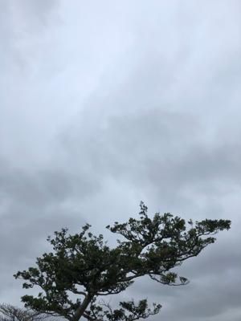
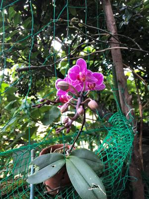

うるがいの話 ある日
最新: ロボット完成【うるがいの話 ある日】とは 一日だけのプログです
『うるがいの話』の最新一日だけのプログで、通信料が少なく経済的だ。カニの画像をクリックすると全ての日付が載る『うるがいの話』サイトを表示します
|
|
【うるがいの話】 うるがい(ｳﾙｶﾞｲ urugai)とは、『もずくがに』の名前でとても大きくなります。 |
|---|---|
|
|
【カミマヤーの話】 猫のことを方言でマヤーといいます。カミマヤー（kamimayaa）とは、神の猫のことです。 |
|
【たながぁの音楽】 たながぁ（ﾀﾅｶﾞｰtanagaa）とは手長えびのことで、何種類かあり大きいのは車 エビぐらいになります。 |

|
【ぶながぁの話】 ぶながー(bunagaa)とは、赤い髪の毛、赤い身体、そして身長は１ｍ２０ｃｍ ぐらい、川の蟹を食べているの目撃された。場所は沖縄県国頭郡大宜味村のと ある村僕の隣近所に住んでいる爺さんから、聞いた話です。 |
|
|
【ギーマの話】 ギーマ(giima)とは、山原の里山に咲くスズランに似た、 花を付けます。実は食べられます、 気が付くと口の周りが紫になっています。 |
2022年03月23日 (水）ロボット完成
17:52

先週金曜日から初めていたＲＰＡのロボットを完成した。暇人が作ったウェブ
サイト（ぶながぁの話、カミマヤーの話、ギーマの話、たながぁの音楽）をヤ
フー、Bing、Googleの検索サイトでこれら４つのサイトを検索するロボット
である。何のタメかというと、サイトを作っても検索サイトで、検索しないと
検索されないからである。これを毎日、手作業で操作していた、意外と大変な
のである。実践しないとなかなか身につかない・・・、だから何なんだ？と思
うかもしれないが。副業に『各種入力作業等』があり、エクセルにあるデータ
をとあるウェブサイトへの入力作業の仕事がある、フとこれってＲＰＡで出来
たら・・と思ったわけである。少しやってみて分かったが、かなりスペシャリ
ストにならないと難しい事が分かった。が、ちびりちびり訓練していずれ副業
へ応用してみようなんて思う。

今日は一日雨、ジョギングができない日である。昨日ジョギングから帰りにサ
ンエーの駐車場の近くにある坂の下りと登りで時間差がある信号の前で、横断
歩道を渡るため待っていると、先に信号が赤になった下り向け道路でサンエー
の駐車場へ入るためかオジーの運転する軽自動車が、本来だと横断歩道の前で
停止しなければいけないのに信号無視をし、右折したいが、まだ赤にならない
登りの対応車線の車が流れていたため、右折できずやがて信号は赤になった。
オジーの軽自動車は、邪魔な場所に止まったままである。横断歩道の信号は緑
になり、別の道路からも車が、動いてきた。私の向かい側には横断歩道を小学
生が渡ろうとして歩きだし、私も歩きだした。ん！、こともあろうかオジーの
軽自動車が横断歩道にバックし始めた！、私は小学生に手をあげて、待ての合
図をしオジーの車に近寄り、止まれの合図をする。オジーが止まったのを確認
したあと、小学生に横断歩道を渡るように合図をし、無事渡るのを確認した後
オジーは無視して私も横断歩道を渡った。まったく、オジーは困ったもんだ。
でも、生きていたらそのうち私もオジーになるのである。
１８時４２分 ビットコインの総資産 ￥１４、８０９↓